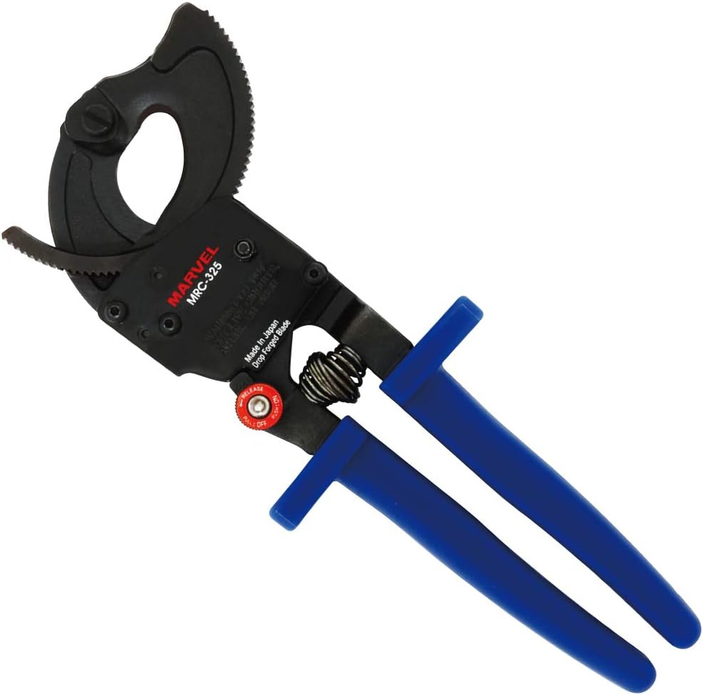

【現場で使ってる】電気工事で使いやすいケーブルカッターおすすめ4選
電気工事の現場で実際に使っているケーブルカッターを紹介します。
ケーブルカッターは、ただ切れればいいというよりも、片手で軽く切れるか、太物まで対応できるか、
とにかく楽に切れるかで使いやすさが大きく変わります。
ニッパーでも切れる場面はありますが、本数が多い作業や太い線になるほど、 専用工具のありがたさを感じやすくなります。
この記事では、片手で使いやすい軽量モデル、太物に強いラチェット式、 ほぼ何でもいける充電式まで、現場で使いやすいモデルを用途別にまとめています。
自分の作業内容に合う1本を選ぶ参考になればと思います。
迷ったら『フジ矢 600-240』から見ればOKです
まず1本持つならこれがかなり分かりやすいです。
切れ味が良く、手動タイプの中では使いやすさを感じやすいモデルです。
ただし、太物が多いならラチェット式や充電式の方が楽なので、 自分の作業内容に合わせて選ぶのが失敗しにくいです。
迷ったらここから選べばOKです
ケーブルカッターは「何をどれくらい切るか」で選ぶとかなり分かりやすいです。
先に結論だけ見るなら、この見方でOKです。
先に結論
『フジ矢 600-240』が分かりやすいです
『ホーザン N-18』が使いやすいです
『マーベル MRC-325』のラチェット式がかなり楽です
『パナソニック EZ45A7X-B』が強いです
用途別にざっくり分けるとこんな感じです
| 機種 | 向いている作業 | 特徴 |
|---|---|---|
| フジ矢 600-240 | まず1本 / 手動メイン | 切れ味が良く、最初に選びやすい |
| ホーザン N-18 | 軽さ重視 / 片手作業 | 167gで扱いやすく長時間作業でも楽 |
| マーベル MRC-325 | 太物 / 力を入れにくい作業 | ラチェット式で太い線も切りやすい |
| パナソニック EZ45A7X-B | 太物メイン / とにかく楽したい | CV・CVT・IVなどほぼ何でも行ける充電式 |
『フジ矢 ケーブルハンディカッター 600-240』

まず1本持つならかなり分かりやすい、切れ味重視の手動モデルです
このモデルのいいところ
切れ味がかなり良く、手動タイプの中ではまず選びやすい1本です。
ケーブルカッターを初めて持つ人でも使いやすさを感じやすいです。
手動タイプでまず選ぶなら、ここから見るのが分かりやすいです。
「とりあえず1本持つなら何がいいか」で考えると、自分はまずこれが分かりやすいと思います。
切れ味がかなり良いので、手動式の中では使いやすさを感じやすいです。
ニッパーよりも専用工具らしい切りやすさがあり、切断作業が多いなら違いを感じやすいです。
まずはこういう基本の1本があるとかなり楽です。
こんな人におすすめ
- まず1本、使いやすいケーブルカッターが欲しい人
- 手動タイプで切れ味重視の物を探している人
- 切断作業の負担を少しでも減らしたい人
『ホーザン ケーブルカッター N-18』

軽さと片手での扱いやすさを重視したい人向けのモデルです
このモデルのいいところ
IV線22mm²も片手で軽く切断しやすく、167gとかなり軽いです。
長時間の作業や、軽さ重視で選びたい人にかなり向いています。
片手で扱いやすい軽さを重視するなら、このモデルがかなり分かりやすいです。
ケーブルカッターは切れるかどうかだけでなく、重さや取り回しでも使いやすさが変わります。
その点、N-18は軽くて扱いやすいので、長時間使う時にも負担を感じにくいです。
片手でサッと使いやすい物を探しているなら、このタイプはかなり相性がいいです。
重い工具が苦手な人にも向いています。
こんな人におすすめ
- 軽いケーブルカッターを使いたい人
- 片手で扱いやすい物を探している人
- 長時間の作業でも疲れにくい物が欲しい人
『マーベル ラチェットケーブルカッター MRC-325』

太い線を切ることが多いならかなり便利なラチェット式モデルです
このモデルのいいところ
ラチェット式なので、太物でも一気に力を入れなくていいのがかなり楽です。
ハンドルロックノブ1つでロックと途中解除ができるのも使いやすいです。
手動タイプでも太い線を切ることが多いなら、こういうラチェット式はかなりありがたいです。
一発で握り切るよりも、少しずつ進められる方が楽に感じる場面が多いです。
普通の手動タイプではしんどい太物でも、ラチェット式ならかなり使いやすさが変わります。
太い線を切る作業があるなら、かなり相性がいいです。
こんな人におすすめ
- 太いケーブルを切ることが多い人
- 手動でも少し楽に切りたい人
- 途中解除できるタイプの方が使いやすい人
『パナソニック 充電ケーブルカッター EZ45A7X-B』

手じゃ無理な太物まで楽に切りたい人向けの充電式モデルです
このモデルのいいところ
大体なんでも行けてかなり楽です。
手動では厳しい太物も切りやすく、作業の負担がかなり変わります。
とにかく楽に切りたいなら、やっぱり充電式はかなり強いです。
本数が多い、太さがある、手動ではしんどい、という場面では違いがかなり出ます。
自分の感覚でも、これは「手じゃ無理です」と感じる場面までかなり行けます。
太物が多い現場なら、作業効率もかなり変わりやすいです。
こんな人におすすめ
- とにかく楽に切断したい人
- 太物を扱うことが多い人
- 手動ではきつい作業を減らしたい人
充電式を使うならバッテリー・充電器も忘れずに

本体のみを選ぶ場合は、バッテリーと充電器が別で必要です
ここは見落としやすいです
EZ45A7X-Bは本体のみなので、バッテリー・充電器セットも一緒に確認しておくと安心です。
充電工具をこれから揃える場合は、バッテリーと充電器まで含めて見ておく方が失敗しにくいです。
後から気づくと手間なので、ここは最初に一緒に見ておくのがおすすめです。
結局どれを選べばいい？
迷ったら → フジ矢 600-240
まず1本持つならこれがかなり分かりやすいです。
軽さ重視 → ホーザン N-18
片手で扱いやすく、長時間作業でも使いやすいです。
太物を切る → マーベル MRC-325
ラチェット式なので、手動でもかなり楽に切りやすいです。
とにかく楽したい → パナソニック EZ45A7X-B
手動ではしんどい太物まで行きたいならかなり強いです。
最初に選ぶならこの2択が分かりやすいです
まず1本なら『フジ矢 600-240』。
もっと楽したい、太物が多いなら『パナソニック EZ45A7X-B』まで見ると失敗しにくいです。
ケーブルカッターでよくある迷い
Q. ニッパーでも切れるなら、ケーブルカッターは要らない？
A. 本数が少なければニッパーでもいける場面はありますが、本数が多い作業や太さがある線では専用工具の方がかなり楽です。
Q. 手動とラチェット式はどっちがいい？
A. まず1本なら手動、太物が多いならラチェット式が分かりやすいです。力を入れにくい人にもラチェット式は相性がいいです。
Q. 充電式はやりすぎ？
A. 細い線しか切らないなら手動でも十分ですが、太物や本数が多い現場ではかなり楽になります。負担を減らしたいなら十分アリです。
合わせて見たい工具


他の工具もまとめてチェック
このページ以外にも、現場で使っている工具を用途別にまとめています。
まとめてチェックしたい方はこちら。
※当サイトはAmazonアソシエイト・プログラムに参加しており、適格販売により収入を得ています。